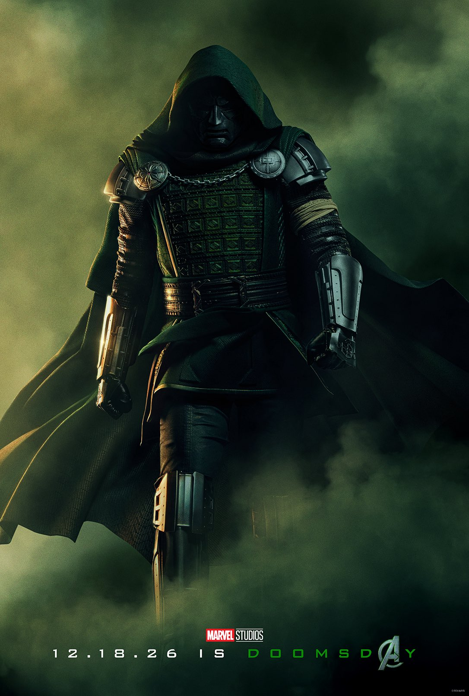
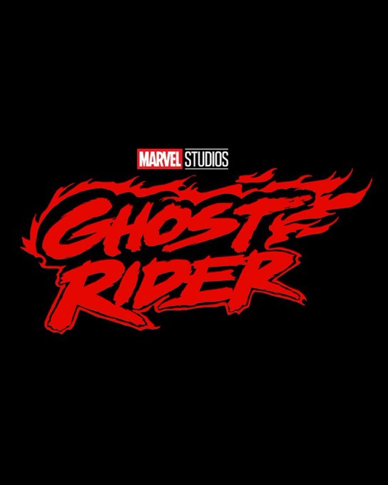
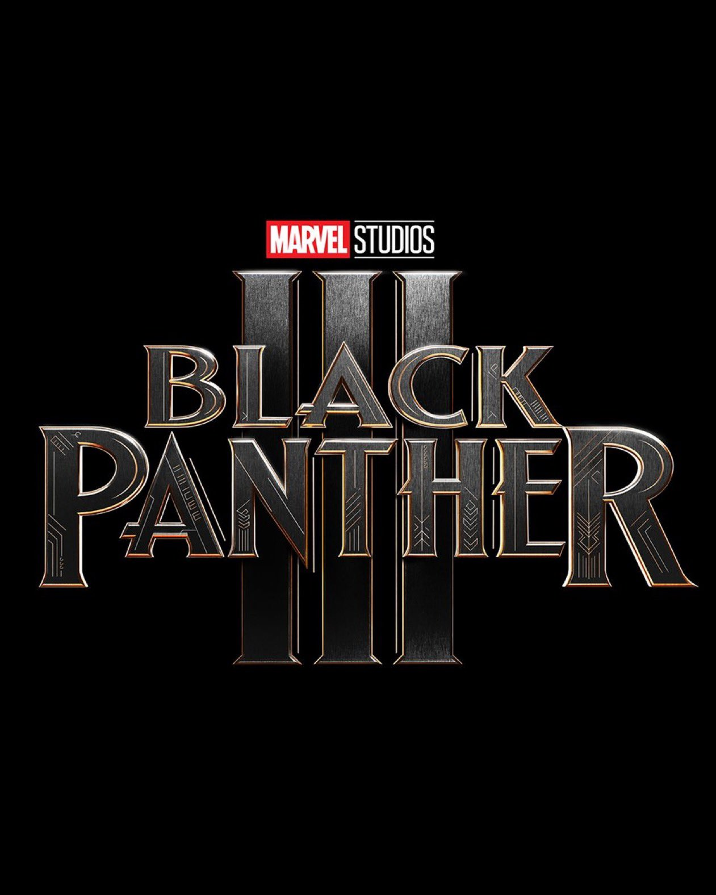

Le panel Marvel Studios approche, et il y a de quoi être hype. Voici ce que j'attends, poste par poste, en distinguant ce qui est déjà tombé de ce qu'il reste à voir.
Mise à jour du 26 juillet 2026 : le panel Hall H a eu lieu à San Diego Comic-Con. La plus grosse bombe : Ryan Gosling est officiellement Ghost Rider dans un film réalisé par Shawn Levy, prévu pour 2028. J'ai ajouté le verdict complet, section par section, ci-dessous.
Sommaire de l'article
- Avengers: Doomsday, déjà dévoilé
- Ghost Rider : Ryan Gosling confirmé
- X-Men
- Avengers (Secret Wars)
- Spider-Man 5
- Nova
- Les Champions (Young Avengers)
- Your Friendly Neighborhood Spider-Man 2
- Daredevil saison 3
- Vision Quest
- Ma théorie : la Saga Mutante
- Récap complet : dates, posters et révélations officielles
Avengers: Doomsday, déjà dévoilé
Celui-là, c'est fait : le trailer d'Avengers: Doomsday est déjà sorti. Pas besoin d'attendre le panel pour celui-ci, j'en ai déjà parlé en détail dans mon analyse du trailer.
Ghost Rider : Ryan Gosling confirmé
Verdict : personne ne l'avait dans sa liste officielle, et pourtant c'est la plus grosse annonce du panel. Ryan Gosling est monté sur la scène de Hall H, précédé par un bruit de moteur de moto, pour révéler qu'il sera le nouveau Ghost Rider du MCU. Le film sera réalisé par Shawn Levy (avec qui Gosling vient de tourner un Star Wars), pour une sortie prévue en 2028. On ne sait pas encore s'il incarnera Johnny Blaze ou Danny Ketch. Kevin Feige a aussi profité du panel pour annoncer David Jonsson (vu dans Alien: Romulus) comme le nouveau T'Challa pour Black Panther 3.
X-Men
Pour le reboot X-Men, j'attends au minimum un premier visuel ou une confirmation de casting. Vu la timeline, ça reste sans doute encore tôt pour un vrai trailer, mais Marvel adore teaser loin à l'avance en ce moment.
Verdict : rien. Malgré la rumeur qui circulait avant le panel, Marvel n'a montré aucune image ni fait aucune annonce sur X-Men. Feige a précisé que la présentation se concentrait uniquement sur les films, les annonces séries étant réservées au D23 le mois prochain.
Avengers (Secret Wars)
Du côté des Avengers, je pense qu'on parle ici surtout d'Avengers: Secret Wars, la conclusion de la Saga du Multivers. Trop tôt pour des images, mais un point d'étape ou un premier logo ne serait pas surprenant.
Verdict : comme pour X-Men, rien n'a filtré sur Secret Wars pendant ce panel, entièrement recentré sur Doomsday et les annonces casting. À suivre pour un futur panel, sans doute une fois Doomsday sorti en salles en décembre.
Spider-Man 5
Avec Brand New Day qui sort dans quelques jours, difficile d'imaginer du contenu concret sur Spider-Man 5 pour l'instant. Je m'attends plutôt à une simple confirmation que le film est en développement, rien de plus.
Nova
Nova traîne dans les rumeurs depuis un moment. Un premier logo ou une confirmation officielle de casting serait déjà une bonne nouvelle pour calmer l'attente.
Les Champions (Young Avengers)
Sur Les Champions (la version MCU des Young Avengers), j'attends une annonce plus formelle du projet, histoire de savoir enfin dans quelle direction Marvel compte l'emmener après tous les indices semés ces dernières années.
Your Friendly Neighborhood Spider-Man 2
Pour la saison 2 de Votre fidèle serviteur Spider-Man, un vrai trailer serait logique vu l'avancement de la production. C'est probablement l'un des morceaux les plus concrets qu'on puisse espérer du panel.
Daredevil saison 3
Pour Daredevil: Born Again saison 3, j'attends au moins un premier teaser, même court. La saison 2 est sortie, donc la voie est libre pour Marvel de teaser franchement la suite plutôt que de rester discret dessus.
Verdict : comme prévu par Feige en ouverture, aucune annonce série n'a eu lieu à ce panel (Daredevil, Champions, Nova, Friendly Neighborhood Spider-Man 2 compris) — Marvel a explicitement réservé le volet télé/streaming pour le D23 Expo le mois prochain.
Vision Quest
Enfin, pour Vision Quest, je table sur un vrai trailer. Le projet est annoncé depuis un moment avec Paul Bettany qui reprend son rôle, et le timing pour un premier aperçu concret semble bon.
Verdict : pas de trailer, mais Feige en a parlé sur scène, décrivant Vision Quest comme le troisième volet de ce qu'il appelle la "trilogie WandaVision". Une confirmation de ton et de continuité, même sans images inédites.
Ma théorie : la Saga Mutante
Au-delà de la liste projet par projet, il y a un truc que j'aimerais voir Marvel annoncer clairement pendant ce panel : une vraie ligne directrice pour l'après-Secret Wars. Et si c'était ça, la prochaine grande saga ?
Je verrais bien Marvel Studios poser les bases d'une Saga Mutante, pas au sens strict "que des X-Men", mais plutôt une ère centrée sur les personnages et communautés qui ont toujours vécu en marge du reste de l'univers partagé. Le nouveau X-Men comme porte d'entrée évidente, mais aussi Black Panther 3 et Shang-Chi 2 comme piliers du même mouvement : des franchises qui reposent sur une identité culturelle forte, une communauté qui se protège elle-même plutôt que d'attendre les Avengers, et une esthétique qui tranche volontairement avec le reste du MCU.
Ce qui me plairait, c'est que Marvel arrête de traiter ces trois franchises comme des satellites isolés et assume plutôt qu'elles racontent la même chose sous des angles différents : qu'est-ce que ça veut dire d'être une communauté à part entière face à un monde qui vous craint ou vous instrumentalise ? Le Wakanda, l'école de Xavier et les Dix Anneaux ont chacun déjà ce sous-texte, les relier explicitement donnerait enfin un vrai sens de saga à ce qui ressemble aujourd'hui à trois lignes séparées.
Si le panel pose ne serait-ce que les bases de ça, un visuel commun, une annonce qui positionne ces films comme liés plutôt qu'indépendants, ce sera pour moi le vrai gros move stratégique de cette conférence, bien plus que n'importe quel trailer isolé.
Verdict global après le panel : pas de Saga Mutante annoncée officiellement, mais la plus grosse surprise venait d'ailleurs — Ghost Rider avec Ryan Gosling. X-Men et Secret Wars restent muets pour l'instant, et tout le volet séries (Daredevil, Champions, Nova...) est renvoyé au D23. Ma théorie tient toujours, mais elle attendra clairement un futur panel pour être confirmée ou enterrée.
Récap complet : dates, posters et révélations officielles
Pour ceux qui veulent juste la liste sèche des annonces officielles du panel Hall H, sans mon avis autour, voici tout ce qui a été confirmé, projet par projet.
Avengers: Doomsday

- Sortie : 18 décembre 2026, uniquement en salles.
- Révélations : le panel a servi de rappel promotionnel, billetterie ouverte via Fandango. Le contenu du film reste celui déjà dévoilé dans le trailer, dont j'ai parlé dans mon analyse dédiée.
Ghost Rider

- Sortie : 2028, en salles (date précise non communiquée).
- Réalisateur : Shawn Levy.
- Casting : Ryan Gosling dans le rôle principal, sa toute première incursion super-héroïque.
- Révélations : annonce surprise faite en direct sur scène par Gosling lui-même, précédée d'un bruit de moteur de moto dans Hall H. Aucune précision sur le personnage exact (Johnny Blaze ou Danny Ketch) ni sur un éventuel poster.
Black Panther 3

- Sortie : 15 décembre 2028, en salles.
- Réalisateur : Ryan Coogler, de retour aux commandes.
- Casting : Letitia Wright (Shuri), Winston Duke (M'Baku), et David Jonsson (Alien: Romulus) dans le rôle du fils adulte de T'Challa, Toussaint, qui devient le nouveau Black Panther.
- Révélations : logo officiel dévoilé sur scène, et Coogler a confirmé que le film sera tourné en 70mm, une première pour un long-métrage MCU.
VisionQuest
- Sortie : 14 octobre 2026, sur Disney+.
- Révélations : Feige a profité du panel pour rappeler la date (déjà annoncée en mai lors des Upfronts Disney) et a confirmé que la série clôt officiellement la "trilogie WandaVision", entamée avec WandaVision et poursuivie par Agatha All Along.
Ce qui n'a pas été annoncé
Pour rappel, aucune date ni visuel n'ont été communiqués pour X-Men, Avengers: Secret Wars, Nova, Les Champions, Daredevil saison 3 ou Your Friendly Neighborhood Spider-Man 2 — Marvel ayant explicitement réservé toutes les annonces séries au D23 Expo du mois prochain.